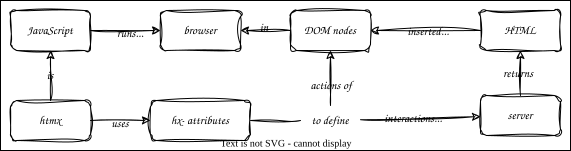

Using HTMX
Overview

Outline
- Go back to the models, views, and server from Serving HTML
- Strip out row and column views
- Add a button for each row
- Styling is ugly, so add a handler for static files in
server.pyas well
- Add an empty
divwith IDexperiments - Add
htmx.jsto head of page to use htmx - Modify buttons to use it
hx-get: get from URLhx-trigger: event that triggers actionhx-target: ID of page element to modify in placehx-swap: replace inner HTML (as opposed to the entire element withouterHTML)
- htmx searches document for properties starting
hx-and adds appropriate callbacks
<button hx-get="/exp/{row.staff_id}" hx-trigger="click" hx-target="#experiments" hx-swap="innerHTML">
x
</button>
- Running it now produces 404 error
- So implement
/exp/idin server, models, and viewsexperimentsfunction inmodels.pyuses an inner join- Add
*argstohandle_formatto spread arguments for convenience
- More common for server to return JSON that a JavaScript library in the browser translates into HTML
- But that approach leads to large (slow) libraries in the browser
- Unfair to people using mobile, on slow connections, etc.